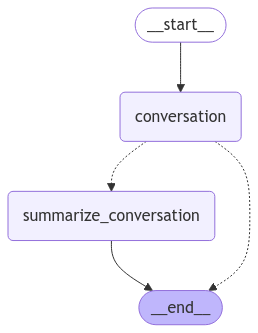

🧠 Tema 1: Chatbot Summarizing
🚀 ¿Qué es el Resumen en un Chatbot?
El resumen de conversaciones es una técnica que permite reducir el historial de mensajes, manteniendo el contexto clave de la conversación.
Esto es particularmente útil cuando trabajamos con LLMs que tienen un límite de tokens o cuando deseamos optimizar el rendimiento del grafo.
🧠 ¿Por Qué es Importante Resumir?
- Ahorro de Recursos: Los modelos LLM procesan menos datos, reduciendo costos y tiempo de respuesta.
- Contexto Clave: Conserva la información más relevante sin perder el flujo de la conversación.
- Escalabilidad: Permite manejar conversaciones largas sin que el historial crezca de forma descontrolada.
Tips
El resumen convierte un historial largo en un contexto breve, relevante y efectivo.
⚙️ ¿Cómo Funciona?
En este ejemplo práctico, veremos un grafo que:
1. Procesa una conversación y genera respuestas.
2. Cuando el historial supera un límite, crea un resumen de la conversación anterior.
3. Continúa la conversación manteniendo solo los mensajes más recientes y el resumen generado.
Esto garantiza que el modelo trabaje con información relevante y no con mensajes redundantes.
🛠️ Componentes Clave del Grafo
-
Nodo de Conversación (
call_model):- Procesa los mensajes del usuario y genera respuestas usando el modelo LLM.
- Si existe un resumen previo, se añade al historial para mantener el contexto.
-
Nodo de Resumen (
summarize_conversation):- Genera un resumen del historial y elimina los mensajes antiguos, manteniendo los más recientes.
-
Condición de Continuación (
should_continue):- Decide si continuar la conversación o resumir el historial basado en la cantidad de mensajes.
-
Memoria Persistente (
MemorySaver):- Almacena el historial y el resumen para garantizar que el grafo recuerde el contexto a lo largo de la interacción.
📋 Ejemplo Práctico: Chatbot con Resumen Automático
Vamos a construir un grafo que implemente estas técnicas.
from langgraph.graph import MessagesState
from langchain_core.messages import SystemMessage, HumanMessage, RemoveMessage, AIMessage
from langgraph.graph import END
from IPython.display import Image, display
from langgraph.checkpoint.memory import MemorySaver
from langgraph.graph import StateGraph, START
from langchain_openai import ChatOpenAI
llm = ChatOpenAI(model="gpt-4o-mini")
class State(MessagesState):
summary: str
# Definimos la logica de nuetro grafo.
def call_model(state: State):
print("---call_model---")
# Get summary if it exists
summary = state.get("summary", "")
# If there is summary, then we add it
if summary:
# Add summary to system message
system_message = f"Resumen de la conversación anterior: {summary}"
# Append summary to any newer messages
messages = [SystemMessage(content=system_message)] + state["messages"]
else:
messages = state["messages"]
response = llm.invoke(messages)
return {"messages": response}
def summarize_conversation(state: State):
print("---summarize_conversation---")
# Primero, cogemos si existe algun resumen previo.
summary = state.get("summary", "")
# Create our summarization prompt
if summary:
summary_message = (
f"Este es el resumen de la conversación hasta la fecha: {summary}\n\n"
"Amplíe el resumen teniendo en cuenta los nuevos mensajes anteriores:"
)
else:
summary_message = "Crea un resumen de la conversación anterior:"
# Añadimos el prompt a nuestra conversación.
messages = state["messages"] + [HumanMessage(content=summary_message)]
response = llm.invoke(messages)
# Eliminamos todos los mensajes antiguos menos los últimos dos.
delete_messages = [RemoveMessage(id=m.id) for m in state["messages"][:-2]]
return {"summary": response.content, "messages": delete_messages}
# Determina si tenemos que resumir o no.
def should_continue(state: State):
print("---should_continue---")
"""Return the next node to execute."""
messages = state["messages"]
# If there are more than six messages, then we summarize the conversation
if len(messages) > 6:
return "summarize_conversation"
# Otherwise we can just end
return END
# Define a new graph
workflow = StateGraph(State)
workflow.add_node("conversation", call_model)
workflow.add_node(summarize_conversation)
# Set the entrypoint as conversation
workflow.add_edge(START, "conversation")
workflow.add_conditional_edges("conversation", should_continue)
workflow.add_edge("summarize_conversation", END)
# Compile
memory = MemorySaver()
graph = workflow.compile(checkpointer=memory)
display(Image(graph.get_graph().draw_mermaid_png()))

🔍 Explicación del Código
-
Clase
State:- Define el estado del grafo, que incluye el historial de mensajes (
messages) y el resumen (summary).
- Define el estado del grafo, que incluye el historial de mensajes (
-
Nodo
call_model:- Genera respuestas basadas en el historial.
- Si existe un resumen, lo incluye como mensaje del sistema.
-
Nodo
summarize_conversation:- Crea un resumen usando el modelo LLM.
- Elimina los mensajes antiguos, manteniendo solo los más recientes y el resumen.
-
Condición
should_continue:- Si el historial supera 6 mensajes, dirige el flujo al nodo de resumen.
- De lo contrario, finaliza la conversación.
-
Grafo y Memoria:
- El grafo utiliza
MemorySaverpara persistir el estado entre interacciones.
- El grafo utiliza
🚀 Veamos Cómo Funciona Con Un Ejemplo
Iniciamos una conversación ficticia entre un usuario y un asistente virtual para observar cómo el grafo gestiona y resume el historial.
🗣️ Primera Iteración: Conversación Inicial
Comenzamos con un intercambio sencillo, donde el usuario solicita información y el asistente responde con detalles sobre los servicios ofrecidos.
# Creamos un hilo
config = {"configurable": {"thread_id": "1"}}
# Inicializamos una conversación
messages = [
HumanMessage(content="Hola, soy Raúl."),
AIMessage(content="¡Hola Raúl! ¿En qué puedo ayudarte hoy?"),
HumanMessage(content="Estoy interesado en conocer más sobre vuestros servicios."),
AIMessage(content="Claro, ofrecemos varios servicios. ¿Hay alguno en particular que te interese?"),
HumanMessage(content="Sí, quiero saber más sobre el servicio de soporte técnico."),
]
response = graph.invoke({"messages": messages}, config)
for m in response["messages"]:
m.pretty_print()
---call_model---
---should_continue---
================================ Human Message =================================
Hola, soy Raúl.
================================== Ai Message ==================================
¡Hola Raúl! ¿En qué puedo ayudarte hoy?
================================ Human Message =================================
Estoy interesado en conocer más sobre vuestros servicios.
================================== Ai Message ==================================
Claro, ofrecemos varios servicios. ¿Hay alguno en particular que te interese?
================================ Human Message =================================
Sí, quiero saber más sobre el servicio de soporte técnico.
================================== Ai Message ==================================
Nuestro servicio de soporte técnico proporciona asistencia para resolver problemas relacionados con software, hardware y otras tecnologías. Esto incluye:
1. **Asistencia Remota**: Te ayudamos a través de conexión remota para solucionar problemas en tiempo real.
2. **Asesoría y Diagnóstico**: Evaluamos el problema y te ofrecemos recomendaciones y soluciones adecuadas.
3. **Mantenimiento Preventivo**: Realizamos chequeos periódicos para prevenir fallos y optimizar el rendimiento de tus equipos.
4. **Soporte 24/7**: Ofrecemos asistencia en cualquier momento para resolver emergencias.
5. **Capacitación**: Proporcionamos formación sobre el uso de software y hardware, así como buenas prácticas de seguridad.
Si necesitas más detalles o tienes alguna pregunta específica, házmelo saber.
Nota
En esta etapa, no se activa la función de resumen, ya que el historial aún no supera los 6 mensajes.
🗣️ Segunda Iteración: Más Preguntas
El usuario realiza una nueva pregunta sobre los costos, y el grafo comienza a acercarse al límite del historial.
input_message = HumanMessage(content="¿Cuánto cuesta el soporte técnico mensual?")
reponse = graph.invoke({"messages": [input_message]}, config)
for m in reponse['messages']:
m.pretty_print()
---call_model---
---should_continue---
---summarize_conversation---
================================ Human Message =================================
¿Cuánto cuesta el soporte técnico mensual?
================================== Ai Message ==================================
Los precios del soporte técnico pueden variar según el proveedor y el tipo de servicios que elijas. Generalmente, las tarifas pueden depender de factores como:
1. **Nivel de soporte**: Soporte básico vs. soporte avanzado.
2. **Tipo de asistencia**: Remota o en sitio.
3. **Número de dispositivos**: Cuántos equipos o usuarios necesitan soporte.
4. **Frecuencia**: Si se requiere asistencia continua o esporádica.
Para darte un precio más específico, sería útil saber más sobre tus necesidades: ¿cuántos dispositivos necesitas cubrir? ¿qué tipo de soporte buscas? Si tienes un proveedor específico en mente, te recomendaría consultar sus tarifas directamente. Si necesitas ayuda para encontrar opciones, puedo ofrecerte orientación.
🗂️ Resumen Automático
Al superar los 6 mensajes, el grafo activa el nodo de resumen. El historial completo se procesa, y se genera un resumen que reemplaza los mensajes antiguos. Solo las dos entradas más recientes permanecen en el historial.
Podemos observar el resumen accediendo a la memoria:
Claro, aquí tienes un resumen de nuestra conversación:
1. **Introducción**: Raúl expresó interés en conocer más sobre los servicios ofrecidos.
2. **Detalles del Soporte Técnico**: Proporcioné información sobre el servicio de soporte técnico, que incluye asistencia remota, asesoría y diagnóstico, mantenimiento preventivo, soporte 24/7 y capacitación.
3. **Costo del Soporte Técnico**: Raúl preguntó sobre los precios del soporte técnico mensual. Le informé que los precios pueden variar dependiendo de diferentes factores, como el nivel de soporte, tipo de asistencia, número de dispositivos y frecuencia de uso, y le sugerí que indagara con proveedores específicos.
Si necesitas algo más o deseas ampliar algún punto, ¡hazmelo saber!
🗣️ Tercera Iteración: Continuación del Contexto
El asistente continúa ofreciendo respuestas relevantes, manteniendo el contexto del resumen generado.
input_message = HumanMessage(content="¿Ofrecen algún descuento si contrato varios meses?")
reponse = graph.invoke({"messages": [input_message]}, config)
for m in reponse['messages']:
m.pretty_print()
---call_model---
---should_continue---
================================ Human Message =================================
¿Cuánto cuesta el soporte técnico mensual?
================================== Ai Message ==================================
Los precios del soporte técnico pueden variar según el proveedor y el tipo de servicios que elijas. Generalmente, las tarifas pueden depender de factores como:
1. **Nivel de soporte**: Soporte básico vs. soporte avanzado.
2. **Tipo de asistencia**: Remota o en sitio.
3. **Número de dispositivos**: Cuántos equipos o usuarios necesitan soporte.
4. **Frecuencia**: Si se requiere asistencia continua o esporádica.
Para darte un precio más específico, sería útil saber más sobre tus necesidades: ¿cuántos dispositivos necesitas cubrir? ¿qué tipo de soporte buscas? Si tienes un proveedor específico en mente, te recomendaría consultar sus tarifas directamente. Si necesitas ayuda para encontrar opciones, puedo ofrecerte orientación.
================================ Human Message =================================
¿Ofrecen algún descuento si contrato varios meses?
================================== Ai Message ==================================
Muchos proveedores de servicios de soporte técnico sí ofrecen descuentos por contratación de servicios por varios meses o en paquetes anuales. Algunos beneficios comunes pueden incluir:
1. **Descuentos por volumen**: Reducir el costo mensual si contratas un número mayor de dispositivos o usuarios.
2. **Descuentos por contrato a largo plazo**: Tarifas más bajas si eliges un contrato de 6 meses, 12 meses o más.
3. **Paquetes promocionales**: Ofertas especiales que combinan diferentes servicios a un costo reducido.
Te recomendaría preguntar directamente al proveedor de soporte técnico que estés considerando para obtener detalles específicos sobre posibles descuentos y promociones. Si necesitas ayuda con algún proveedor en particular, házmelo saber.
🎓 Conclusión
Como hemos visto, resumir el historial de mensajes es una estrategia muy útil para manejar conversaciones largas sin perder el contexto y evitando exceder los límites de tokens del modelo.
Con este enfoque, el chatbot podría incluso responder preguntas como "¿Cómo me llamo?" sin problemas, ya que conserva la información clave en el resumen.
Es importante destacar que el prompt utilizado para generar el resumen puede ser refinado y personalizado para adaptarse mejor a nuestras necesidades específicas, lo que demuestra el potencial y la flexibilidad de esta técnica.
🔎 Recursos:
- Ver notebook en Google Colab
- Más ejemplos: Google Colab
 Definición del concepto: Summarizing
Definición del concepto: Summarizing- How-to-guide: Summarizing
🧑🏫 ¿Qué Hemos Aprendido?
- Resumir Conversaciones: Reduce el historial manteniendo el contexto relevante.
- Grafo Dinámico: El flujo del grafo se adapta según la cantidad de mensajes en el historial.
- Persistencia de Memoria: Usa memoria persistente para recordar información entre interacciones.
🌐 ¿Qué es lo Siguiente?
En el próximo tema, exploraremos Human in the Loop, una técnica para integrar intervención humana en el flujo de un grafo, permitiendo un control más preciso en interacciones complejas.